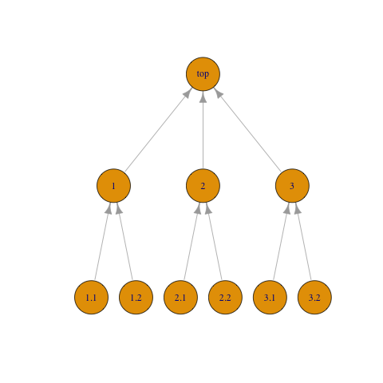

Overview
rollupTree implements a general function for
computations in which some property of a parent element is a combination
of corresponding properties of its child elements. The mass of an
assembly, for example, is the sum of the masses of its subassemblies,
and the mass of each subassembly is the sum of masses of its parts,
etc.
rollupTree can perform computations specified by
arbitrarily-shaped (but well-formed) trees, arbitrarily-defined
properties and property-combining operations. Defaults are provided to
simplify common cases (atomic numerical properties combined by summing),
but functional programming techniques allow the caller to pass arbitrary
update methods as required.
Despite its name, rollupTree can operate on directed acyclic graphs
that are not trees if instructed to apply less stringent validation
rules to its input. See default_validate_dag() and
rollup().
Example With A Data Frame
Consider this example Work Breakdown Structure from WorkBreakdownStructure.com:

The computations in the example are worked out already; we show here how to reproduce them.
A Work Breakdown Structure is a tree, that is, a graph that is connected and acyclic. It is, in addition, directed, that is, the edges have direction. We arbitrarily chose the edge direction to go from child to parent. Finally, it is single-rooted: every vertex but one has a single parent vertex; the root vertex has no parent.
The leaf elements (vertices) of the tree require asserted values for
the properties (work, budget) of interest. Property values for non-leaf
elements are computed by rollup().
We begin by capturing the structure of the tree and asserted values
in a data frame we call wbs_table. Values to be computed
are initially unknown. Each element is uniquely identified by an
id column1. We also indicate parent id in the
pid column but this information is not used directly by
rollup().
library(rollupTree)
wbs_table
#> id pid name work budget
#> 1 top <NA> Construction of a House NA NA
#> 2 1 top Internal NA NA
#> 3 2 top Foundation NA NA
#> 4 3 top External NA NA
#> 5 1.1 1 Electrical 11.8 25000
#> 6 1.2 1 Plumbing 33.8 61000
#> 7 2.1 2 Excavate 18.2 37000
#> 8 2.2 2 Steel Erection 5.8 9000
#> 9 3.1 3 Masonry Work 16.2 62000
#> 10 3.2 3 Building Finishes 14.2 21500A key feature of recursively-defined problems like this is that the
computation for a given element must occur after properties for it
children are known (either asserted or computed). Traversing a tree in
this manner can be achieved by using a well-known algorithm in graph
theory known as topological sort. For that reason, we construct
an igraph (Csárdi et al.
2025) graph object in R, from which we can conveniently (1) check
that the graph is in fact a well-formed tree, and (2) efficiently
execute a topological sort to order the computations. (Note that,
although the problems solved by rollup are defined recursively,
the implementation in software is not recursive.)
It is a simple matter to construct a graph from the information in our data frame:
library(rollupTree)
wbs_tree <- create_rollup_tree(
get_keys = function() wbs_table$id,
get_parent_key_by_child_key = function(key) wbs_table[wbs_table$id == key, "pid"]
)
A directed acyclic graph may have more than one topological sort; any
is suitable for our purpose. Here is what rollup() uses
internally:
igraph::topo_sort(wbs_tree)
#> + 10/10 vertices, named, from dacf65e:
#> [1] 1.1 1.2 2.1 2.2 3.1 3.2 1 2 3 topSumming a Single Numeric Property
Although our data in this first example is a data frame,
rollup() can operate on an arbitrary R object if provided
with update and validate methods for that object. For
the common case in which the parameter of interest is a numeric column
in a data frame, the combine operation is addition, and the key column
is named id, the package provides
update_df_prop_by_id() and validate_df_by_id()
functions that can be invoked as boilerplate. To roll up the
work property, for example, we simply invoke:
rollup(
tree=wbs_tree,
ds=wbs_table,
update=function(d, t, s) update_df_prop_by_id(df=d, target=t, sources=s, prop="work"),
validate_ds=function(t, d) validate_df_by_id(tree=t, df=d, prop="work")
)
#> id pid name work budget
#> 1 top <NA> Construction of a House 100.0 NA
#> 2 1 top Internal 45.6 NA
#> 3 2 top Foundation 24.0 NA
#> 4 3 top External 30.4 NA
#> 5 1.1 1 Electrical 11.8 25000
#> 6 1.2 1 Plumbing 33.8 61000
#> 7 2.1 2 Excavate 18.2 37000
#> 8 2.2 2 Steel Erection 5.8 9000
#> 9 3.1 3 Masonry Work 16.2 62000
#> 10 3.2 3 Building Finishes 14.2 21500Chaining Rollups
If we want to roll up the budget column as well, we can
simply chain two rollup()s together. In this example we use
R’s pipe operator:
rollup(
tree=wbs_tree,
ds=wbs_table,
update=function(d, t, s) update_df_prop_by_id(df=d, target=t, sources=s, prop="work"),
validate_ds=function(t, d) validate_df_by_id(tree=t, df=d, prop="work")
) |> rollup(
tree=wbs_tree,
ds=_,
update=function(d, t, s) update_df_prop_by_id(df=d, target=t, sources=s, prop="budget"),
validate_ds=function(t, d) validate_df_by_id(tree=t, df=d, prop="budget")
)
#> id pid name work budget
#> 1 top <NA> Construction of a House 100.0 215500
#> 2 1 top Internal 45.6 86000
#> 3 2 top Foundation 24.0 46000
#> 4 3 top External 30.4 83500
#> 5 1.1 1 Electrical 11.8 25000
#> 6 1.2 1 Plumbing 33.8 61000
#> 7 2.1 2 Excavate 18.2 37000
#> 8 2.2 2 Steel Erection 5.8 9000
#> 9 3.1 3 Masonry Work 16.2 62000
#> 10 3.2 3 Building Finishes 14.2 21500In most cases, this approach suffices. The code is simple and clear,
and performance is not typically an issue. (In other testing
rollup() performs tens of thousands of non-trivial property
updates per second.) We show here some alternate approaches, mainly to
illustrate architectural features of the approach that may be useful for
more esoteric applications.
Chaining Update Methods
update_df_prop_by_id() (like every well-behaved
update method) modifies only the specified column and leaves
the rest of the data frame unchanged, so we can chain two updates within
a single rollup() instead of chaining two
rollup()s. Similarly, a data set validator returns a
logical value, so we can make the conjunction of two validators:
rollup(
tree = wbs_tree,
ds = wbs_table,
update = function(d, t, s) {
update_df_prop_by_id(
df = d,
target = t,
sources = s,
prop = "work"
) |>
update_df_prop_by_id(target = t,
sources = s,
prop = "budget")
},
validate_ds = function(t, d) {
validate_df_by_id(tree = t, df = d, prop = "work") &&
validate_df_by_id(tree = t, df = d, prop = "budget")
}
)
#> id pid name work budget
#> 1 top <NA> Construction of a House 100.0 215500
#> 2 1 top Internal 45.6 86000
#> 3 2 top Foundation 24.0 46000
#> 4 3 top External 30.4 83500
#> 5 1.1 1 Electrical 11.8 25000
#> 6 1.2 1 Plumbing 33.8 61000
#> 7 2.1 2 Excavate 18.2 37000
#> 8 2.2 2 Steel Erection 5.8 9000
#> 9 3.1 3 Masonry Work 16.2 62000
#> 10 3.2 3 Building Finishes 14.2 21500Custom get, set, and update Methods
In this example we create a custom get method that builds a
named vector from the specified properties (using lower-level function
df_get_by_id()) and a corresponding set method
(using df_set_by_id()). We then create a custom
update method using these methods. (The default
combine method still works because R knows how to add vectors.)
Finally, we create a custom data set validator and invoke
rollup() with our custom methods.
my_get <- function(d, i) c(
w=df_get_by_id(df=d, id=i, prop="work"),
b=df_get_by_id(df=d, id=i, prop="budget")
)
my_set <- function(d, i, v) {
df_set_by_id(df=d, id=i, prop="work", val=v["w"]) |>
df_set_by_id(id=i, prop="budget", val=v["b"])
}
my_update <- function(d, t, s) {
update_prop(ds=d, target=t, sources=s, set=my_set, get=my_get)
}
my_validate <- function(t, d) {
validate_ds(tree=t, ds=d,
get_keys=function(d) df_get_ids(df=d),
get_prop=my_get,
op=function(v) my_check(v["w"]) && my_check(v["b"])
)
}
my_check <- function(v)
is.numeric(v) && !is.na(v) && (v > 0.0)
rollup(
tree = wbs_tree,
ds = wbs_table,
update = my_update,
validate_ds = my_validate
)
#> id pid name work budget
#> 1 top <NA> Construction of a House 100.0 215500
#> 2 1 top Internal 45.6 86000
#> 3 2 top Foundation 24.0 46000
#> 4 3 top External 30.4 83500
#> 5 1.1 1 Electrical 11.8 25000
#> 6 1.2 1 Plumbing 33.8 61000
#> 7 2.1 2 Excavate 18.2 37000
#> 8 2.2 2 Steel Erection 5.8 9000
#> 9 3.1 3 Masonry Work 16.2 62000
#> 10 3.2 3 Building Finishes 14.2 21500Custom combine Method
Finally, we illustrate the use of a custom combiner. Suppose we have 5% uncertainty in our leaf cost numbers. Add those uncertainty numbers to our data frame:
new_wbs_table <- wbs_table
new_wbs_table$work <- NULL
new_wbs_table$budget_unc <- ifelse(is.na(wbs_table$budget), NA, wbs_table$budget * 0.05)
new_wbs_table
#> id pid name budget budget_unc
#> 1 top <NA> Construction of a House NA NA
#> 2 1 top Internal NA NA
#> 3 2 top Foundation NA NA
#> 4 3 top External NA NA
#> 5 1.1 1 Electrical 25000 1250
#> 6 1.2 1 Plumbing 61000 3050
#> 7 2.1 2 Excavate 37000 1850
#> 8 2.2 2 Steel Erection 9000 450
#> 9 3.1 3 Masonry Work 62000 3100
#> 10 3.2 3 Building Finishes 21500 1075The standard technique for accumulating uncertainties is to combine using root-sum-square (RSS).
combine_rss <- function(vl) {
sqrt(Reduce(f = `+`, x = Map(
f = function(v)
v * v,
vl
)))
}
result <- rollup(
tree = wbs_tree,
ds = new_wbs_table,
update = function(d, t, s)
update_df_prop_by_id(
df = d,
target = t,
sources = s,
prop = "budget"
) |>
update_df_prop_by_id(
target = t,
sources = s,
prop = "budget_unc",
combine = combine_rss
),
validate_ds = function(t, d)
validate_df_by_id(tree = t, df = d, prop = "budget_unc"),
)
result$budget_unc_pct <- result$budget_unc / result$budget * 100.
result
#> id pid name budget budget_unc budget_unc_pct
#> 1 top <NA> Construction of a House 215500 5025.497 2.332017
#> 2 1 top Internal 86000 3296.210 3.832802
#> 3 2 top Foundation 46000 1903.943 4.139007
#> 4 3 top External 83500 3281.101 3.929462
#> 5 1.1 1 Electrical 25000 1250.000 5.000000
#> 6 1.2 1 Plumbing 61000 3050.000 5.000000
#> 7 2.1 2 Excavate 37000 1850.000 5.000000
#> 8 2.2 2 Steel Erection 9000 450.000 5.000000
#> 9 3.1 3 Masonry Work 62000 3100.000 5.000000
#> 10 3.2 3 Building Finishes 21500 1075.000 5.000000Example With A List
Suppose instead of a data frame we have a list of lists:
wbs_list <- lapply(split(wbs_table, wbs_table$id),
function(r) list(name = r$name, budget = r$budget)
)
str(wbs_list)
#> List of 10
#> $ 1 :List of 2
#> ..$ name : chr "Internal"
#> ..$ budget: num NA
#> $ 1.1:List of 2
#> ..$ name : chr "Electrical"
#> ..$ budget: num 25000
#> $ 1.2:List of 2
#> ..$ name : chr "Plumbing"
#> ..$ budget: num 61000
#> $ 2 :List of 2
#> ..$ name : chr "Foundation"
#> ..$ budget: num NA
#> $ 2.1:List of 2
#> ..$ name : chr "Excavate"
#> ..$ budget: num 37000
#> $ 2.2:List of 2
#> ..$ name : chr "Steel Erection"
#> ..$ budget: num 9000
#> $ 3 :List of 2
#> ..$ name : chr "External"
#> ..$ budget: num NA
#> $ 3.1:List of 2
#> ..$ name : chr "Masonry Work"
#> ..$ budget: num 62000
#> $ 3.2:List of 2
#> ..$ name : chr "Building Finishes"
#> ..$ budget: num 21500
#> $ top:List of 2
#> ..$ name : chr "Construction of a House"
#> ..$ budget: num NAWe construct update and validate functions as follows:
list_get <- function(d, i) d[[i]]$budget
list_set <- function(d, i, v) { d[[i]]$budget = v; d }
list_update <- function(d, t, s) { update_prop(d, t, s, list_set, list_get) }
list_validate <- function(t, d) validate_ds(t, d, get_keys = function(l) names(l), get = list_get)The output of rollup() is as expected:
list_result <- rollup(wbs_tree, wbs_list, list_update, list_validate)
str(list_result)
#> List of 10
#> $ 1 :List of 2
#> ..$ name : chr "Internal"
#> ..$ budget: num 86000
#> $ 1.1:List of 2
#> ..$ name : chr "Electrical"
#> ..$ budget: num 25000
#> $ 1.2:List of 2
#> ..$ name : chr "Plumbing"
#> ..$ budget: num 61000
#> $ 2 :List of 2
#> ..$ name : chr "Foundation"
#> ..$ budget: num 46000
#> $ 2.1:List of 2
#> ..$ name : chr "Excavate"
#> ..$ budget: num 37000
#> $ 2.2:List of 2
#> ..$ name : chr "Steel Erection"
#> ..$ budget: num 9000
#> $ 3 :List of 2
#> ..$ name : chr "External"
#> ..$ budget: num 83500
#> $ 3.1:List of 2
#> ..$ name : chr "Masonry Work"
#> ..$ budget: num 62000
#> $ 3.2:List of 2
#> ..$ name : chr "Building Finishes"
#> ..$ budget: num 21500
#> $ top:List of 2
#> ..$ name : chr "Construction of a House"
#> ..$ budget: num 215500Example With A Tree
The tree can serve as the dataset with proper attributes and methods. To illustrate, we add the budget figures from our data frame as vertex attributes to the tree:
library(igraph)
#>
#> Attaching package: 'igraph'
#> The following objects are masked from 'package:stats':
#>
#> decompose, spectrum
#> The following object is masked from 'package:base':
#>
#> union
new_wbs_tree <- Reduce(
f = function(g, k) set_vertex_attr(g, 'budget', k, df_get_by_id(wbs_table, k, 'budget')),
x = names(V(wbs_tree)),
init = wbs_tree
)
ib <- vertex_attr(new_wbs_tree, "budget")
names(ib) <- names(V(new_wbs_tree))
ib
#> top 1 2 3 1.1 1.2 2.1 2.2 3.1 3.2
#> NA NA NA NA 25000 61000 37000 9000 62000 21500We construct update and validate functions as follows:
tree_get <- function(d, k) vertex_attr(d, "budget", k)
tree_set <- function(d, k, v) set_vertex_attr(d, "budget", k, v)
tree_update <- function(d, t, s) update_prop(d, t, s, set = tree_set, get = tree_get)
tree_validate <- function(t, d) validate_ds(t, d, get_keys = function(d) names(V(d)), get = tree_get)The output of rollup() is as expected:
tree_result <- rollup(new_wbs_tree, new_wbs_tree, update = tree_update, validate_ds = tree_validate)
ob <- vertex_attr(tree_result, "budget")
names(ob) <- names(V(tree_result))
ob
#> top 1 2 3 1.1 1.2 2.1 2.2 3.1 3.2
#> 215500 86000 46000 83500 25000 61000 37000 9000 62000 21500Simple Fault Tree Analysis
Fault tree analysis is similarly recursive. We show here a greatly-simplified (Devasia 2021) example to illustrate a particular feature of the implementation.

For the purpose of illustration, we make the following simplifying assumptions:
Every gate is associated with an intermediate event, and each gate/event pair can be represented by a single vertex in the tree.
Only gates of type AND and OR are permitted.
Our initial fault properties table is:
#> id type prob
#> 1 Water overflowing or NA
#> 2 Circuit failure and no warning lamp and NA
#> 3 Sensor failure basic 0.02
#> 4 No voltage at input or NA
#> 5 Chip failure basic 0.05
#> 6 Warning lamp burned basic 0.03
#> 7 No V in network basic 0.12
#> 8 Fuse burned basic 0.23The edge list of the fault tree is:
#> + 7/7 edges from 2d2da5d (vertex names):
#> [1] Circuit failure and no warning lamp->Water overflowing
#> [2] Sensor failure ->Water overflowing
#> [3] No voltage at input ->Water overflowing
#> [4] Chip failure ->Circuit failure and no warning lamp
#> [5] Warning lamp burned ->Circuit failure and no warning lamp
#> [6] No V in network ->No voltage at input
#> [7] Fuse burned ->No voltage at inputGet and set methods for this example are simple and obvious:
df_get_fault_props <- function(df, id) {
list(
type = df_get_by_id(df, id, "type"),
prob = df_get_by_id(df, id, "prob")
)
}
df_set_fault_props <- function(df, id, v) {
df_set_by_id(df, id, "prob", v$prob)
}In most applications (e.g., mass properties), the combining operation only the values to be combined, and is therefore passed only those values as input. In the case of a fault tree, however, the input for an AND gate are multiplied, whereas for an OR gate are summed. We can accommodate this situation by passing an optional type argument to the combiner follows:
combine_fault_props <- function(vl, type) {
list(
prob = Reduce(
f = if (type == "and") "*" else "+",
Map(f = function(v) v$prob, vl)
)
)
}
update_fault_props <- function(ds, parent_key, child_keys) {
update_prop(
ds,
target = parent_key,
sources = child_keys,
set = df_set_fault_props,
get = df_get_fault_props,
combine = function(vl)
combine_fault_props(vl, df_get_fault_props(ds, parent_key)$type)
)
}
validate_fault_props <- function(fp) {
if (fp$type != "basic") stop(sprintf("invalid leaf node type %s", fp$type))
if (!is.numeric(fp$prob) || fp$prob < 0.0 || fp$prob > 1.0)
stop(sprintf("invalid probability value %f", fp$prob))
TRUE
}
validate_fault_props_table <- function(tree, df) {
validate_ds(tree, df, df_get_ids, df_get_fault_props, validate_fault_props)
}Calling rollup() in the usual manner yields:
#> id type prob
#> 1 Water overflowing or 0.3715
#> 2 Circuit failure and no warning lamp and 0.0015
#> 3 Sensor failure basic 0.0200
#> 4 No voltage at input or 0.3500
#> 5 Chip failure basic 0.0500
#> 6 Warning lamp burned basic 0.0300
#> 7 No V in network basic 0.1200
#> 8 Fuse burned basic 0.2300